A Comparison of Cryptographic Algorithms for Software RAID-5
Linux Software RAID Performance Comparisons
The Problem
Several cryptographic algorithms are available for use with software
RAID-5. While there is a great deal of analysis available regarding
the relative security of these algorithms, less information is
available regarding performance when used for software RAID-5.
The cryptsetup command has an align-payload option that the man page
claims should be set to the "full stripe boundary" of the underlying
RAID. The graphs in the right hand column verify that this is true.
The Controller
- Supermicro AOC-SAT2-MV8
- 8 SATA II ports
- 64-bit PCI-X133MHz (tested in 32-bit PCI slot)
- Chipset: MV88SX6081
- Linux driver: sata_mv
- Cost: $99.99 from newegg.com
- Configuration: JBOD
The Test System
- Motherboard: Asus K8N-DRE
- Processors: Two 1.8GHz Opteron 244
- RAM: 8GB DDR400 running at 333MHz
- Slots: 1 32-bit PCI; 1 PCI Express x16
- Drives: Seagate Barracuda 7200.11 1000Gbytes ST31000333AS
- Drive cage: Supermicro CSE-M35T-1B 5-Bay Enclosure (fits in
three 5-inch chassis bays; sells for about $100-$120 from
newegg.com)
The Test Matrix
- Read Percentage: 100% (pure read), 50% (mixed), 0% (pure write)
- Random Percentage: 0% (sequential), 100% (random)
- Thread counts: 1 and 20
- Block sizes: 4k, 8k, 32k, 64k, 256k, 1m, 4m, 8m, 64m
- Targets: All 5 driver were tested simultaneously, as well as
each drive individually.
- All I/Os are issued using the O_DIRECT flag.
- All tests last 20 seconds.
Conclusion
AES-128 is fastest, followed by AES-256, twofish, and then blowfish.
This may be due to an assembler version of AES being available as a
kernel module for Linux. However, all of the algorithms have
similar performance for may workloads, and AES-256 is only
significantly slower than AES-128 for multithreadded sequential
reads. Hence there is no compelling reason to select AES-128 over
AES-256.
Various payload alignment also produces similar results for most
workloads. Small payload alignment shows some degradation in
performance, whereas large payload alignment (512KB and 1MB) show
the best performance over the wides range of testing.
Recommendation: AES-256 and payload-alignment of a full stripe
size. (Note that the align-payload parameter for cryptsetup is
in units of 512 byte sectors, although all the graphs presented
here use kilobytes and megabytes.)
Sequential Single Threaded Tests
For sequential reads, all the algorithms have similar performance,
with some small I/O 100% reads doing better on AES-128, twofish-127,
and blowfish-128. For large I/O sizes, AES-128 is a clear winner.
Payload aligment provides similar performance at small I/O sizes,
with 512KB and 1MB alignment having small advantages at larger I/O
sizes.
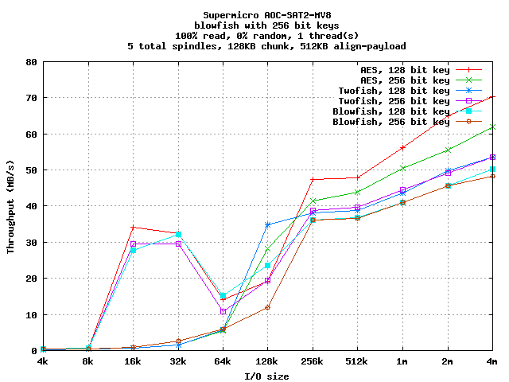
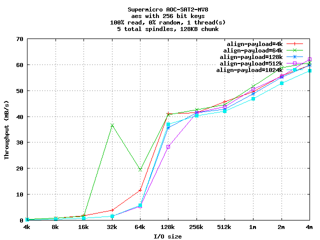
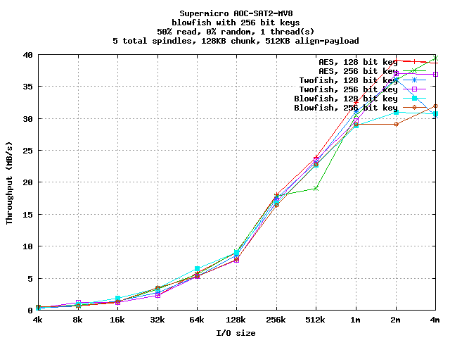
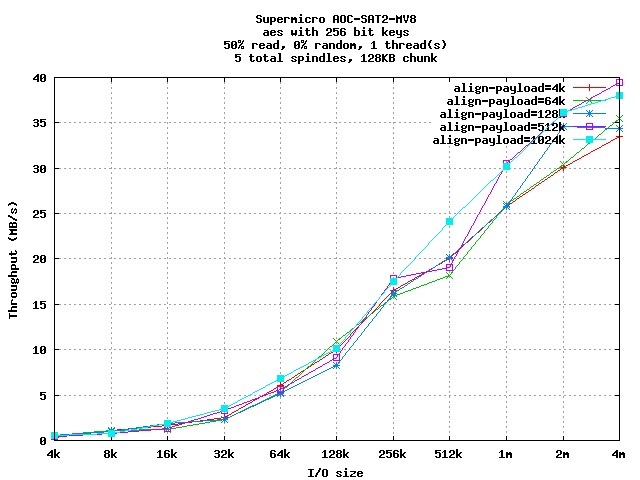
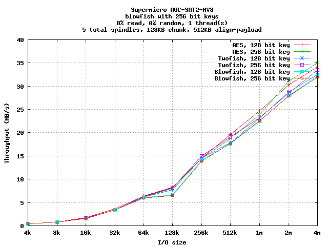
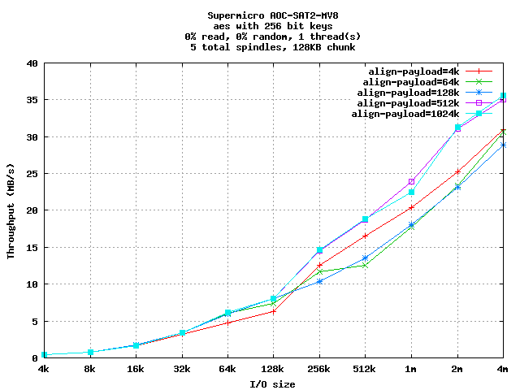
Random Single Threaded Tests
For random reads, performance of all of the algorithms is similar,
with AES-128 best for large I/O sizes.
Payload alignment is also similar, but for workloads with writes at
larger I/O sizes, the 4KB alignment is clearly worse, and the the
512KB and 1M alignment is clearly better.
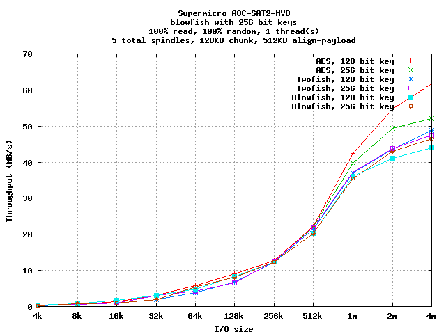
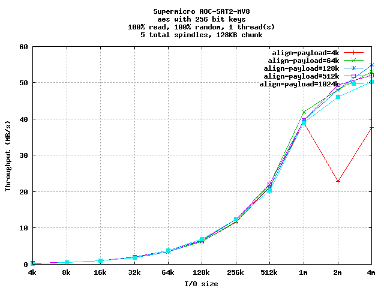
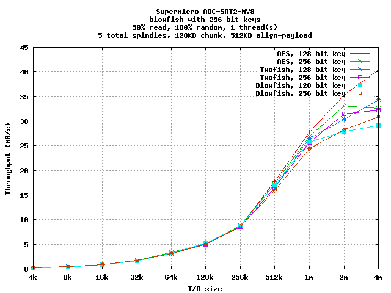
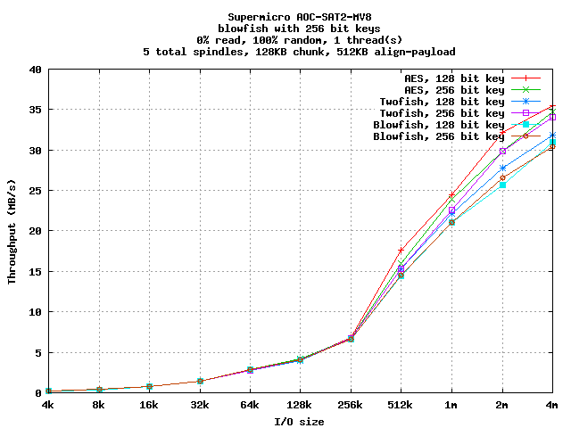
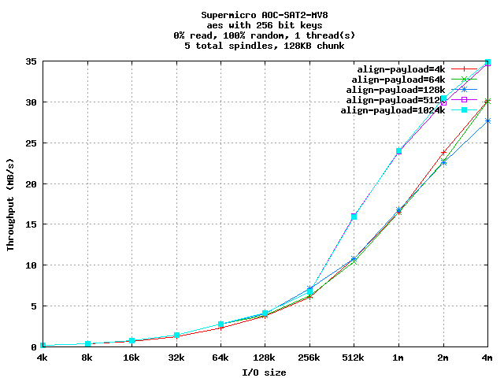
Sequential Multi-Threaded Tests
Multithreaded sequential reads show a clear differentiation between
algorithms, with AES-128 outperforming all other algorithms.
Some deficiencies are clearly seen in small payload alignment sizes.
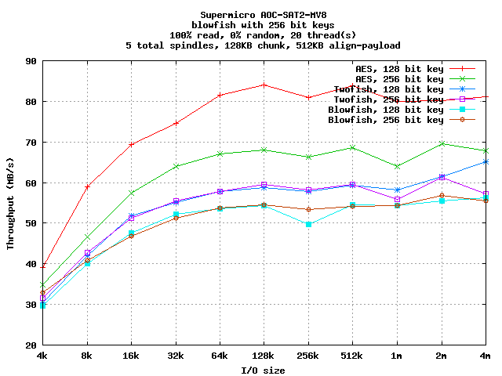
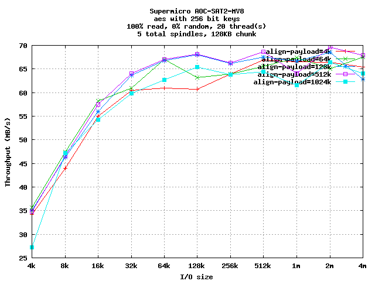
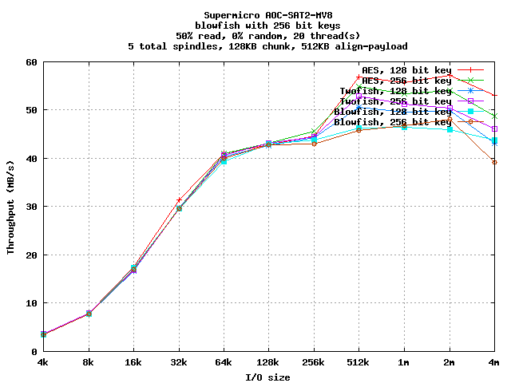
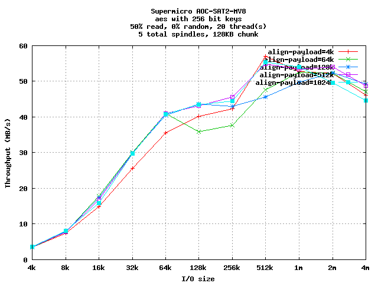
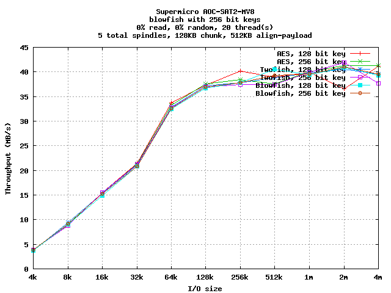
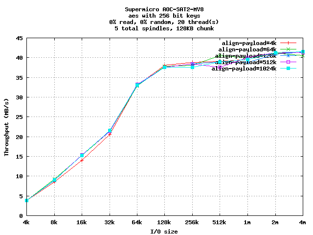
Random Multi-Threaded Tests
For multithreaded random tests, the algorithms are again similar,
especially at small I/O sizes.
Payload alignment shows clear benefit to 512KB and 1MB payload sizes.
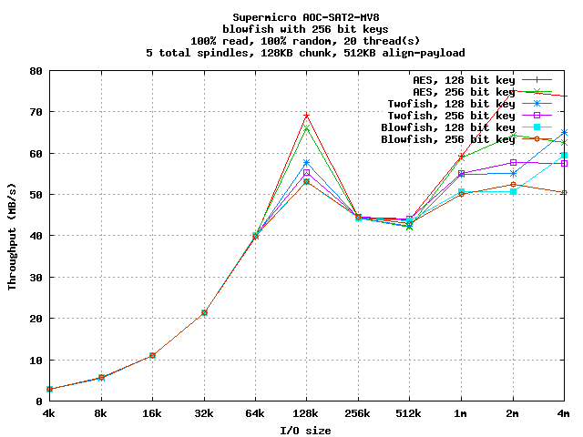
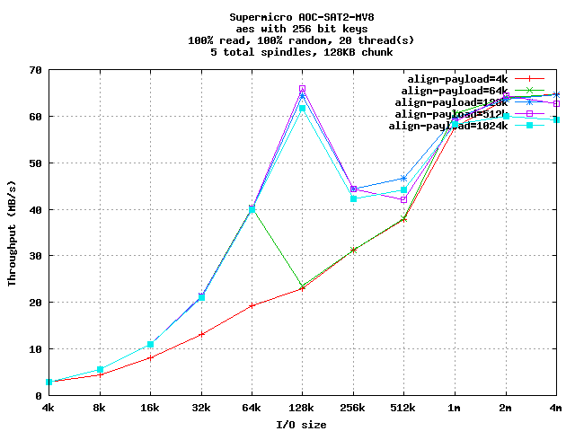
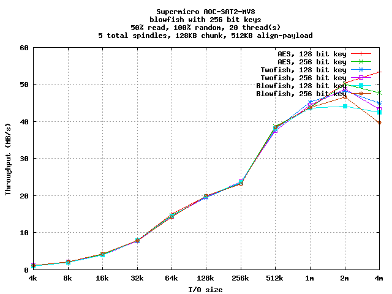
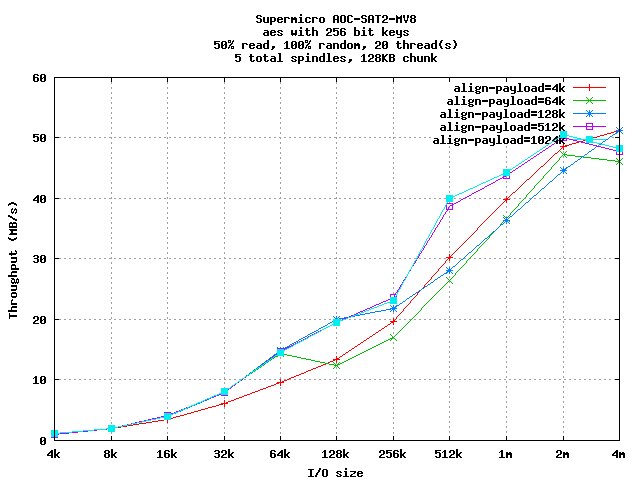
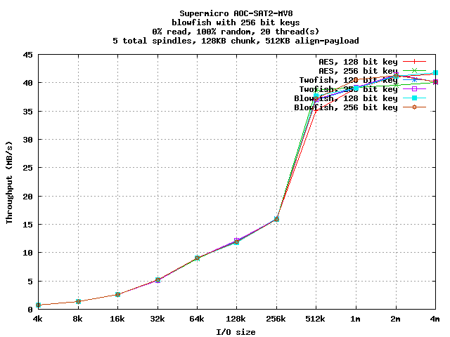
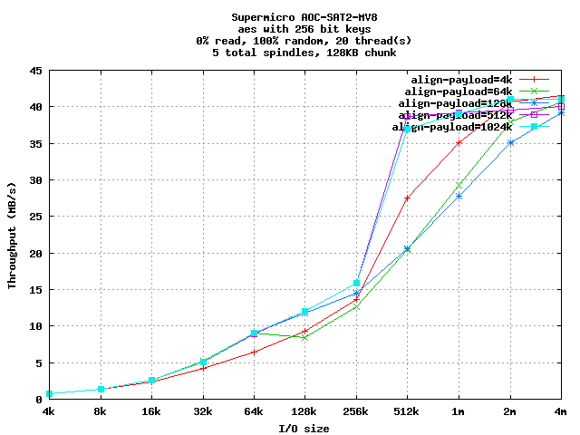